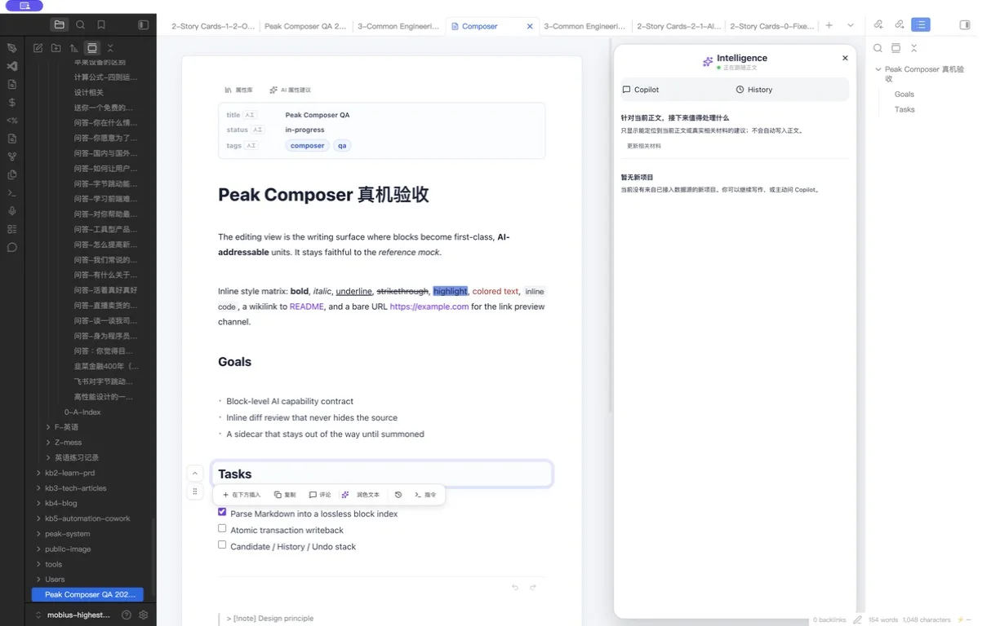
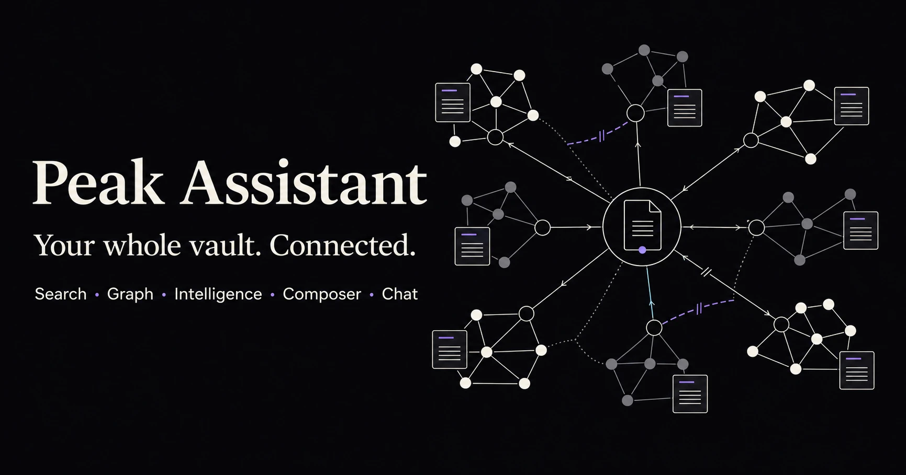
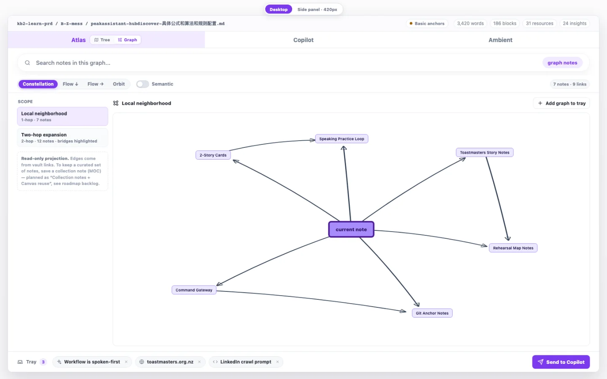
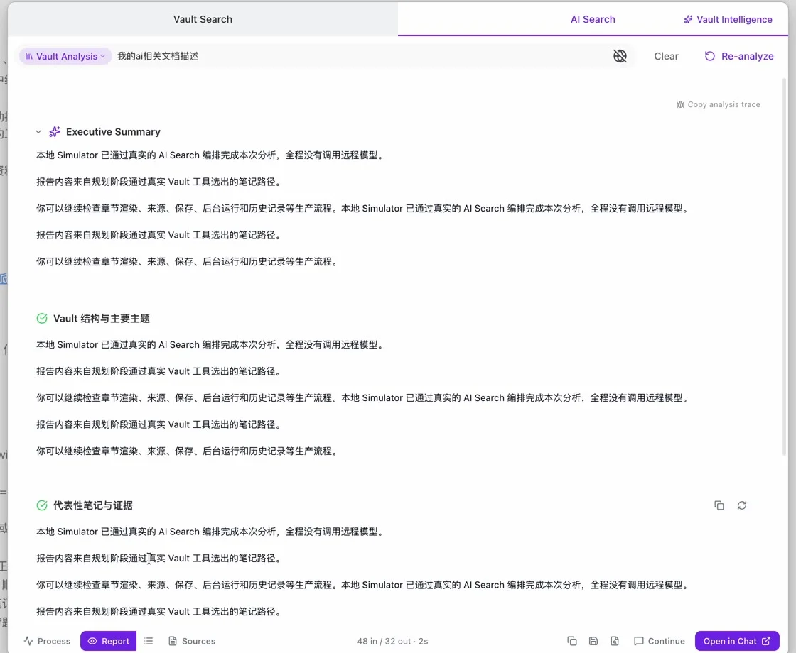
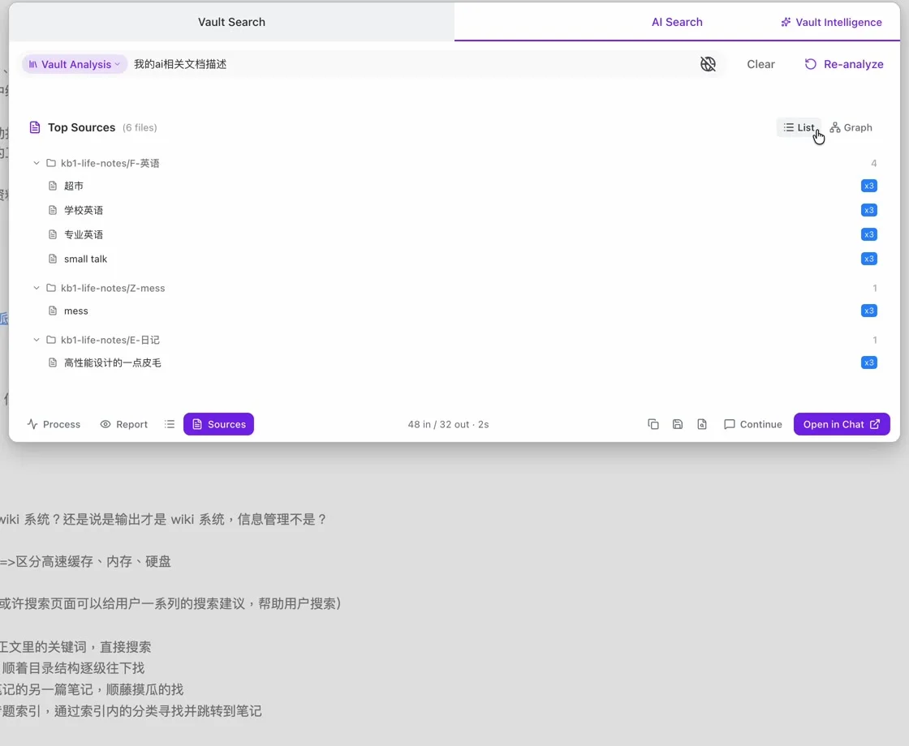
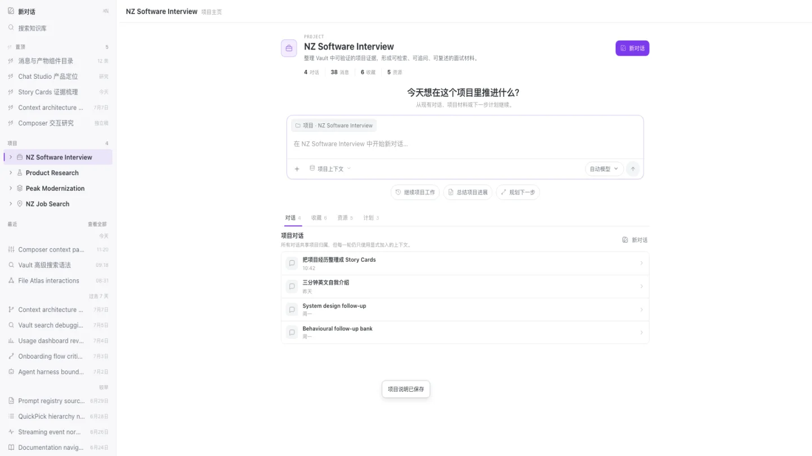
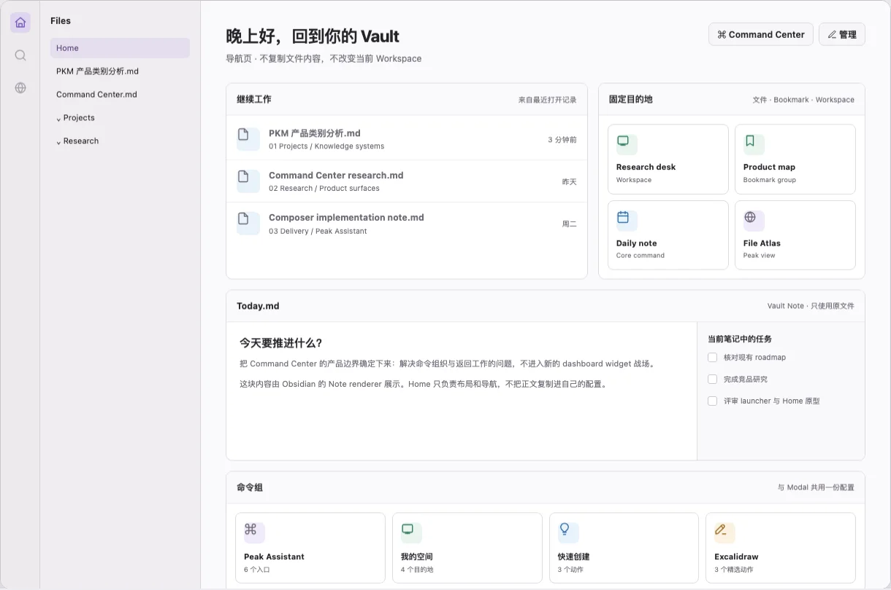
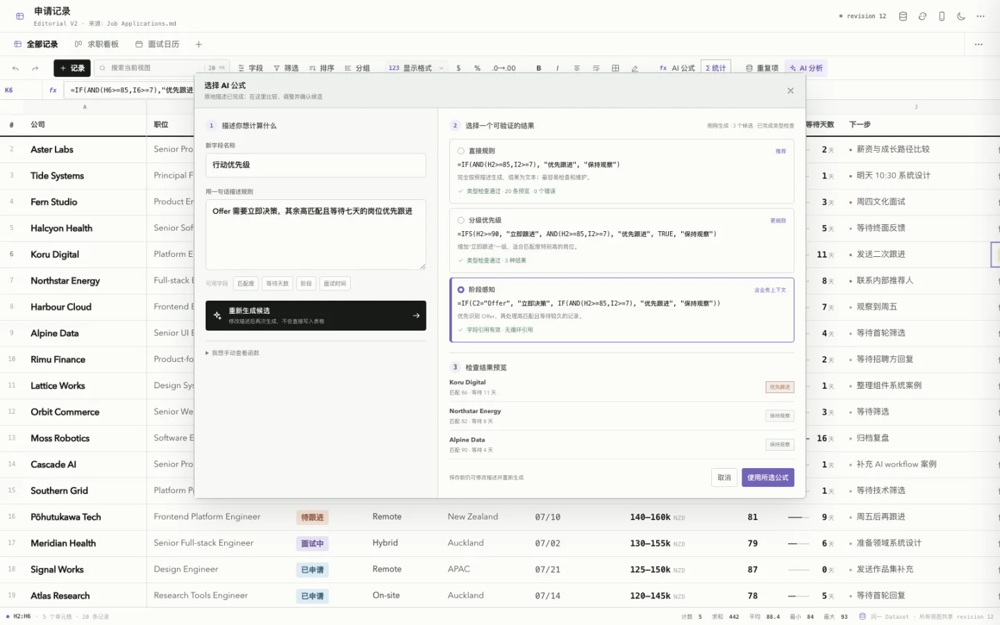

Search
Vault Search, AI Search, List, Tree, Graph, natural-language query parsing, refinement, saved reports.
A Copilot inside every document. Smart connections across the whole vault. An agent workspace for work that takes more than one turn—grounded by Search, Graph, evidence, and the models you choose.

Not another chat window.
Every note stays a real source. Search, Graph, Intelligence, Composer, and Chat become connected ways to inspect and act on the same knowledge.

Peak is not a collection of unrelated AI buttons. Search, Graph, Intelligence, writing, conversations, generation, providers, and control surfaces share the same vault context and evidence trail.
Vault Search, AI Search, List, Tree, Graph, natural-language query parsing, refinement, saved reports.
Navigate document structure, work files, links, resources, local neighbourhoods, and related material.
Result graphs, Atlas neighbourhoods, semantic edges, hubs, gaps, bridges, and versioned AI Graph artifacts.
Find hubs, missing links, structural holes, stale clusters, orphan notes, drift, and maintenance opportunities.
Markdown-first editing with block, selection, document, Base, Canvas, and Excalidraw-aware Copilot actions.
Projects, conversations, assistants, resources, artifacts, branching, attachments, and long-running agent work.
A curated launcher and Home for files, workspaces, bookmarks, dashboards, and Peak actions.
Action-level model, tool, approval, budget, output, custom prompt, assistant, and saved-content governance.
Generate and edit images, create video, music, and voice, and understand attached audio/video.
Multi-provider profiles, role routing, Peak Harness, permissions, RunEnvelope, MCP, skills, and traces.
Spreadsheet work, Datasets, ComputePlan, AI formulas, views, charts, and revision-safe updates.
Onboarding, three index levels, Usage Dashboard, budgets, storage governance, and debug receipts.
Status matters: “In current source” means code exists in this development branch—not that a public release package is available. Preview and roadmap items keep their exact maturity visible below.
Peak brings three familiar AI workflows into one evidence-aware system. The active note can become the anchor, related material can become reviewable context, and a longer task can become a permissioned run—without installing a separate product for every step.
Select text, focus a block, use the current document, or bring a larger object into context. Ask, rewrite, transform, generate, compare, and review the result beside the source.
Let the current note, block, query, or selected graph region become the anchor. Preview why material is related, separate authored links from semantic edges, and carry the right sources into the next action.
Give a project or conversation files, resources, skills, tools, and clear boundaries. Peak can plan, search, inspect, create artifacts, call permissioned tools, and keep the run available for review.
The three modes share one vault context and expand into capabilities that a standalone chat, connections list, or agent panel cannot cover alone.
Move from one result to its neighbourhood, from a neighbourhood to the vault’s structure, and from structure to action. Physical links, semantic relationships, co-citation, direction, communities, hubs, and gaps remain distinguishable.

Turn result sets into a navigable graph with Cytoscape layouts, semantic edges, direction, inspector context, and isolated-match handling.
Local or two-hop neighbourhoods, constellation/flow/folder/orbit layouts, link direction, semantic toggles, and work-file context.
See hubs, soft orphans, missing backlinks, fragile bridges, abandoned clusters, structural holes, drift, and recommended review actions.
Immutable graph versions, parent-linked history, evidence-bearing edges, legacy import, and rebuildable SQLite projections.
Nebula exploration, Source–Sink direction, and a Vault Intelligence “Healing Ray” overlay are researched future modes—not shipped claims.
Peak keeps the research trail close to the result, so you can judge the answer before you depend on it.
Start with the work you need done, not a feature menu.
Peak gathers relevant notes and keeps their paths attached.
Move between the report, graph, and exact source set behind it.
Carry the result into Chat, Composer, Atlas, or a saved artifact.


The same vault context moves between searching, understanding, writing, conversation, generation, and control—without turning every capability into a top-level command.

Project homes, conversations, assistants, project context, resources, artifacts, message variants, attachments, agent runs, and media tools.
Visual shown: product design reference. Current runtime and interaction status remains documented in the roadmap.
A curated spatial launcher for files, workspaces, bookmarks, dashboards, Peak commands, and your own grouped actions—alongside native Cmd/Ctrl+P.
Visual shown: accepted design reference.Full-text, fuzzy, vector, metadata, PPR and co-citation retrieval; List/Tree/Graph; AI query parser/refinement; background sessions; reports, sources, replay, and Chat handoff.
Open/recent work-file rail, Most used sorting, document tree/flat views, headings, blocks, links, resources, local graph, selected-element inspection, and reveal-to-editor paths.
Find and regenerate hubs. Find gaps, structural holes, missing backlinks, tag explosions, stale hubs, fragile bridges, orphan notes, abandoned clusters, and recent drift.
Lossless Markdown-first editing, block/selection/document AI, formatting, tables and charts, native objects, candidates, receipts, history, Copilot, and Intelligence sidecar.
Generate and edit images with masks, create covers and inline art, route Sora/fal video, music and TTS jobs, confirm cost, cancel/retry, and understand audio/video attachments.
OpenAI, Anthropic, Google, Perplexity, OpenRouter, Ollama, LiteLLM/custom endpoints, model roles, embeddings, reranking, Peak Harness, RunEnvelope, budgets, cancellation, and trace receipts.
Connect MCP servers, compile bounded skills, quarantine tools, gate permissions, and selectively expose external Obsidian plugin commands through one reviewed tool path.
Onboarding, provider tests, Fast/Semantic/Full index modes, startup indexing, Usage Dashboard, cost and budget views, optimization hints, and local debug traces.
Related notes, working-theme inference, serendipity, current-work state, and source-backed findings designed to move into Composer Intelligence rather than another floating panel.
Future capabilities belong on the product page, but with a clear contract: research is not release, a mock is not runtime, and a green build is not live interaction acceptance.
Peak Sheet is designed to move from free cells and formulas into stable Datasets, typed fields, Table/Chart and later multi-view work, with AI-generated ComputePlans that stay previewable and revision-safe.

Peak separates user-owned files, durable machine records, and rebuildable indexes. Provider-backed features make their dependencies explicit.
Read the storage modelMarkdown and native Obsidian files remain the user-owned source of truth.
Fast Index, SQLite read models, caches, and internal diagnostics stay on device.
Selected context may be sent to the model, embedding, web-search, media, or external-tool service you configure.
Composer work is designed around candidates, receipts, history, and explicit review paths.
Peak Assistant is open source and under active development. There is no official binary or Community Plugins release yet; today, early users build from source.
Explore the source, follow the roadmap, or build the current preview in your own Obsidian vault.